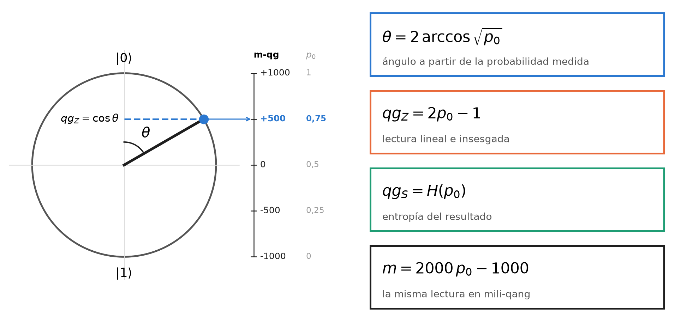
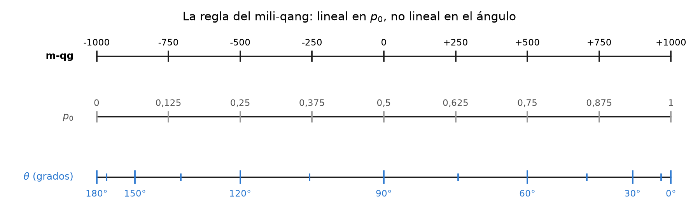
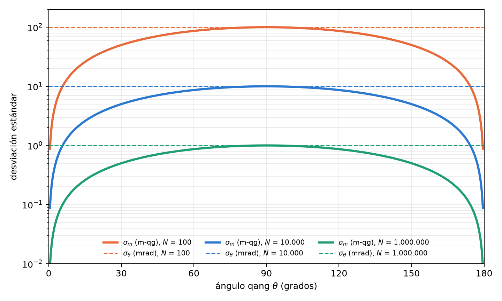
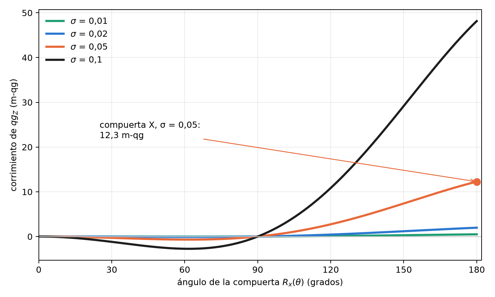
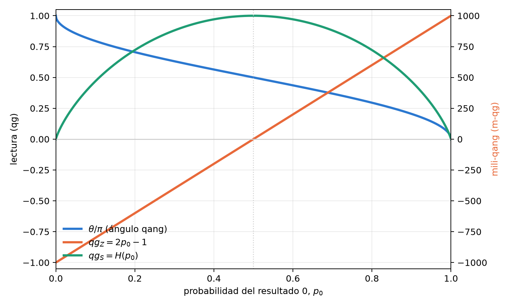
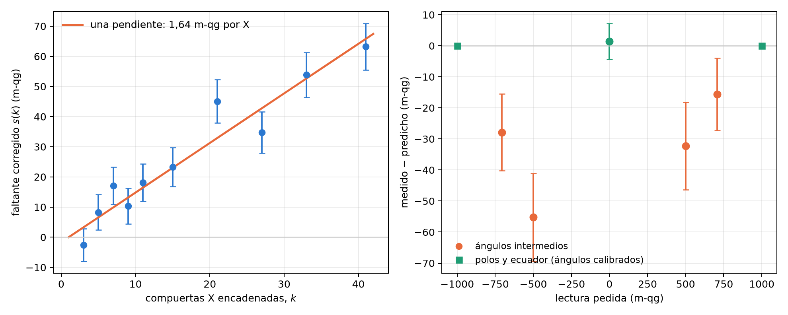

1 La unidad qang: definición, mili-qang y la ecuación de probabilidad
Un qubit se diseña con ángulos y se observa con frecuencias. Quien escribe un circuito elige rotaciones \(R_y(\theta)\); quien lo ejecuta recibe cuentas de ceros y unos. Entre ambas descripciones media una función trigonométrica que casi nunca se nombra, y que es la fuente de varias dificultades prácticas: gradientes que divergen, barras de error que se encogen o se inflan según el estado, y parámetros que no se pueden leer directamente del experimento. Este capítulo construye la base del libro en tres pasos: la definición de la unidad qang (qg), la teoría del mili-qang (su submúltiplo) y la ecuación de probabilidad que une ambas con lo que se mide. Cada resultado se respalda con un gráfico calculado con el propio paquete (qang.probability, §167), de modo que las figuras y el texto citan los mismos números.
1.1 Definición del qang
Todo estado puro de un qubit se escribe, salvo una fase global, como
\[ |\psi\rangle = \cos\frac{\theta}{2}\,|0\rangle + e^{i\varphi}\sin\frac{\theta}{2}\,|1\rangle , \qquad \theta\in[0,\pi],\ \varphi\in[0,2\pi). \]
La pareja \((\theta,\varphi)\) es un punto de la esfera de Bloch y es la forma natural de preparar el estado: una rotación \(R_y(\theta)\) seguida de una fase \(R_z(\varphi)\). Una medición en la base computacional no devuelve \(\theta\): devuelve, en cada disparo, el resultado 0 con probabilidad
\[ p_0 = \cos^2\frac{\theta}{2}\qquad\text{(regla de Born).} \]
Definición. La unidad qang toma como coordenada primaria el valor esperado de \(\sigma_z\), llamado sesgo polar:
\[ \boxed{\;qg_Z = \langle\sigma_z\rangle = p_0 - p_1 = 2p_0 - 1 = \cos\theta\;}\qquad qg_Z\in[-1,1]. \]
De la misma probabilidad salen las otras dos lecturas de la unidad: el ángulo qang \(\theta=\arccos(qg_Z)\in[0,\pi]\) y la dispersión de superposición \(qg_S=H(p_0)\in[0,1]\), la entropía de Shannon del resultado (se estudia más abajo). La Figura 1.1 resume la definición: el punto del círculo es el estado, su proyección sobre el eje vertical es \(qg_Z\), y la escala de la derecha da la misma lectura en mili-qang y en probabilidad.

Tres propiedades hacen de \(qg_Z\) una buena coordenada de trabajo:
- Es una biyección. En \(\theta\in[0,\pi]\), la función \(\cos\theta\) es estrictamente decreciente y recorre \([-1,1]\): cada valor de \(qg_Z\) corresponde a una única latitud de la esfera.
- Es directamente medible. \(\widehat{qg}_Z = (n_0-n_1)/N\) es el promedio de los resultados \(\pm1\) de los disparos; no requiere inversión ni ajuste.
- Vale para cualquier estado. Para un estado mixto, \(qg_Z = \operatorname{Tr}(\rho\,\sigma_z)\), y se reduce a \(\cos\theta\) cuando \(\rho=|\psi\rangle\langle\psi|\) (§3).
El signo y el rango tienen una lectura física inmediata: \(qg_Z=+1\) es el polo \(|0\rangle\), \(qg_Z=-1\) el polo \(|1\rangle\), y \(qg_Z=0\) cualquier punto del ecuador, donde el resultado de la medición es máximamente incierto.
Una unidad de ingeniería. Una unidad útil no necesita ser una magnitud física nueva; necesita volver legible lo que se mide. El decibelio no agrega física a la potencia: la expresa en una escala que vuelve sumables las ganancias de una cadena de amplificadores. El qang cumple un papel análogo para el qubit: expresa su estado en la escala en la que el experimento lo entrega, de modo que preparación, ruido y lectura se comparan en las mismas unidades. Es una convención operativa, y como toda convención vale por lo que simplifica.
1.2 Teoría del mili-qang
1.2.1 Definición y escala
Las desviaciones que importan en un qubit real son pequeñas: errores de calibración, deriva, ruido de lectura. Para expresarlas conviene un submúltiplo, el mili-qang (m-qg):
\[ 1\ \text{qg} = 1000\ \text{m-qg},\qquad m = 1000\,qg_Z\ \in[-1000,\,+1000]\ \text{m-qg}. \]
La escala va de \(-1000\) m-qg en el polo \(|1\rangle\) a \(+1000\) m-qg en el polo \(|0\rangle\), con el cero en el ecuador. Un estado con \(qg_Z=0{,}502\) está a \(501{,}8\) m-qg; su diferencia con el ideal \(0{,}5\) es de \(1{,}8\) m-qg. La misma definición vale para los otros ejes, \(qg_X\) y \(qg_Y\), con lo que todo el vector de Bloch se expresa en m-qg.
1.2.2 Lineal en la probabilidad, no lineal en el ángulo
Como \(qg_Z=2p_0-1\), el mili-qang es lineal en la probabilidad: un m-qg equivale siempre a \(\Delta p_0=0{,}0005\), es decir, 0,05 puntos porcentuales, en cualquier lugar de la escala. En cambio no es lineal en el ángulo:
\[ \frac{dm}{d\theta} = -1000\,\sin\theta \qquad\Longrightarrow\qquad \Delta\theta \approx \frac{1}{1000\,\sin\theta}\ \text{rad por m-qg}. \]
En el ecuador (\(\theta=90^\circ\)) un m-qg es exactamente un miliradián; a \(\theta=30^\circ\) son dos. Cerca de un polo la relación lineal deja de valer y hay que usar la exacta: un estado que está \(\delta\) m-qg por debajo del polo \(|0\rangle\) forma con él el ángulo
\[ \theta_\delta = \arccos\!\left(1-\frac{\delta}{1000}\right)\approx\sqrt{\frac{2\delta}{1000}} . \]
Un m-qg del polo son \(0{,}0447\) rad (\(2{,}56^\circ\)); diez m-qg, \(8{,}1^\circ\). La Figura 1.2 muestra la consecuencia: sobre la regla del mili-qang, las marcas de probabilidad están equiespaciadas y las de ángulo se amontonan en los polos. Por eso la unidad se define sobre la probabilidad y no sobre el ángulo: es la escala en la que el instrumento entrega los datos.

1.2.3 Resolución por disparos
Con \(N\) disparos, \(\widehat{qg}_Z\) tiene varianza \(\sin^2\theta/N\) (lo derivamos en la sección del arcoseno), de modo que la desviación estándar de la lectura en mili-qang es
\[ \sigma_m = \frac{1000\,\sin\theta}{\sqrt N}\ \text{m-qg}, \qquad N_\delta = \left(\frac{1000\,\sin\theta}{\delta}\right)^{2} \]
donde \(N_\delta\) es el número de disparos necesario para resolver \(\delta\) m-qg con un sigma. En el ecuador, resolver 10 m-qg requiere \(10^4\) disparos y resolver 1 m-qg, \(10^6\). A \(60^\circ\) y con 1000 disparos, \(\sigma_m=27{,}4\) m-qg; para bajar a 5 m-qg en ese mismo punto hacen falta 30 000 disparos. La Figura 1.3 compara \(\sigma_m\) con la incertidumbre del ángulo, \(\sigma_\theta=1/\sqrt N\): la lectura en m-qg es más precisa cerca de los polos, y la del ángulo vale lo mismo en todo el círculo. Las dos curvas se tocan en el ecuador, donde un m-qg es un miliradián.

1.2.4 Presupuesto de error de compuerta
La escala permite expresar un error de compuerta en las mismas unidades que la lectura. Si la amplitud de un pulso tiene un error aleatorio relativo de desviación \(\sigma\), el sesgo polar esperado tras \(R_x(\theta)\) es
\[ \mathbb E[qg_Z] = \cos\theta\; e^{-\theta^2\sigma^2/2} \qquad\Longrightarrow\qquad \varepsilon_m = 1000\cos\theta\left(e^{-\theta^2\sigma^2/2}-1\right)\ \text{m-qg} \]
(§160). El error acerca la lectura al ecuador: con \(\sigma=0{,}05\), una compuerta \(X\) (\(\theta=\pi\)) entrega \(qg_Z=-0{,}988\) en lugar de \(-1\), un corrimiento de \(12{,}3\) m-qg, y crece con el cuadrado del ángulo (Figura 1.4). Una rotación de \(\pi/2\) no se corre en absoluto, porque ya está en el ecuador. El capítulo 2 usa esta fórmula para elegir, entre representaciones equivalentes de una misma compuerta, la de menor área de pulso.

1.3 La ecuación de probabilidad del qang y del mili-qang
Las secciones anteriores llevan a un único enunciado, que es la base de todo el libro: todas las lecturas qang de un qubit son funciones exactas de una sola probabilidad, \(p_0\):
\[ \boxed{\; \theta = 2\arccos\sqrt{p_0},\qquad qg_Z = 2p_0-1,\qquad qg_S = H(p_0),\qquad m = 2000\,p_0-1000\ \text{m-qg} \;} \]
y, en sentido inverso, la ecuación de probabilidad del mili-qang:
\[ p_0 = \frac{1000+m}{2000},\qquad \theta = \arccos\frac{m}{1000}. \]
No hay aproximaciones: son cuatro lecturas de un mismo número. La Figura 1.5 las muestra juntas. \(qg_Z\) y el mili-qang son la misma recta, en dos escalas; el ángulo es monótono pero se empina en los polos; la entropía sube hasta el ecuador y vuelve a bajar, por eso necesita una rama para invertirse. La Tabla 1.1 da los valores de referencia.

| \(\theta\) | \(p_0\) | \(qg_Z\) | m-qg | estado |
|---|---|---|---|---|
| \(0\) | \(1\) | \(+1\) | \(+1000\) | polo \(|0\rangle\) |
| \(\pi/4\) | \(0{,}854\) | \(+0{,}707\) | \(+707\) | |
| \(\pi/3\) | \(0{,}75\) | \(+0{,}5\) | \(+500\) | |
| \(\pi/2\) | \(0{,}5\) | \(0\) | \(0\) | ecuador (\(|+\rangle\), \(|{+i}\rangle\), …) |
| \(2\pi/3\) | \(0{,}25\) | \(-0{,}5\) | \(-500\) | |
| \(\pi\) | \(0\) | \(-1\) | \(-1000\) | polo \(|1\rangle\) |
1.3.1 Más de dos resultados: la distancia estadística
La ecuación se generaliza a una medición con varios resultados. Para dos distribuciones \(p=(p_k)\) y \(q=(q_k)\), la distancia estadística de Wootters (1981), o ángulo de Bhattacharyya, es
\[ d(p,q) = \arccos\sum_k\sqrt{p_k\,q_k}. \]
Para dos resultados, la distancia entre \((p_0,1-p_0)\) y el polo \((1,0)\) es \(\arccos\sqrt{p_0}=\theta/2\): el ángulo qang es, salvo el factor 2, la distancia estadística entre lo que se mide y el estado de referencia. Con tres resultados, por ejemplo, \(p=(0{,}5;\,0{,}3;\,0{,}2)\) y \(q=(0{,}4;\,0{,}4;\,0{,}2)\) están a \(0{,}113\) rad. Esta es la puerta por la que la unidad sale del qubit: la Parte II la usa para la información de Fisher y la métrica de Fubini–Study, y la misma geometría vale para cualquier proporción medida, cuántica o no.
1.4 Por qué medir en qg: la brecha geometría–probabilidad
La relación \(p_0=\cos^2(\theta/2)\) entre el parámetro de control y la cantidad observada es no lineal, y su derivada se anula en los polos. Esto tiene consecuencias concretas. Si un algoritmo variacional quiere ajustar el estado en función de lo que mide, la regla de la cadena introduce el factor
\[ \frac{dE}{dq} = -\frac{1}{\sin\theta}\,\frac{dE}{d\theta}, \]
que diverge en \(\theta=0\) y \(\theta=\pi\) (notas de investigación, §1). Y si se quiere estimar \(\theta\) a partir de \(N\) disparos, la varianza de \(\hat p_0\) cambia con el estado, de modo que la incertidumbre de cada lectura depende de dónde esté el qubit (§5). Ninguno de los dos problemas es exótico: aparecen en cuanto se intenta razonar en términos de lo que el experimento entrega, y la ecuación de probabilidad es la herramienta para tratarlos.
1.5 Inversión y el signo de rama
El ángulo se recupera con \(\theta=\arccos(qg_Z)\). La inversión tiene un límite: \(\cos\theta\) es par, de modo que \(qg_Z\) no distingue \(\theta\) de \(-\theta\). Mientras se trabaja en \([0,\pi]\) no hay problema, pero un optimizador que necesita cruzar un polo queda atrapado. El remedio es medir también el signo del seno: el par \((qg_Z, s)\) con \(s=\operatorname{sign}(qg_X)\) es biunívoco en todo el círculo (§65). En la molécula de H₂ el óptimo variacional está en \(\theta\approx-0{,}22\); toda actualización que usa solo \(qg_Z\) se detiene en el estado de Hartree–Fock, mientras que la versión con signo llega a la energía exacta.
1.6 La entropía del resultado: \(qg_S\)
El sesgo polar dice hacia dónde apunta el qubit; no dice cuán impredecible es la medición. Para eso está la dispersión de superposición, la entropía de Shannon del resultado:
\[ qg_S = H(p_0) = -p_0\log_2 p_0 - (1-p_0)\log_2(1-p_0) \in [0,1]. \]
Como \(qg_Z\) y \(qg_S\) dependen de la misma población \(p_0\), están ligadas por una identidad exacta y sin ramas (§7):
\[ qg_S = H\!\left(\frac{1+qg_Z}{2}\right), \]
válida para todo estado de un qubit, puro o mixto, cualquiera sea su preparación. Su derivada, \(\tfrac{d\,qg_S}{d\,qg_Z}=\tfrac12\log_2\tfrac{1-qg_Z}{1+qg_Z}\), diverge en los polos: es la contraparte entrópica de la singularidad del gradiente. Cerca de un polo, un cambio mínimo del sesgo produce un cambio relativo enorme de la entropía.
1.7 Invertibilidad de \(qg_S\) y sus barras de error
A diferencia de \(qg_Z\), la entropía no es invertible en todo el dominio: \(qg_S(\theta)=qg_S(\pi-\theta)\). La población \(p_0\) decrece de 1 a 0 en \([0,\pi]\) y \(H\) crece hasta \(p=\tfrac12\) y luego decrece, de modo que \(qg_S\) es estrictamente creciente en \([0,\pi/2]\) y estrictamente decreciente en \([\pi/2,\pi]\) (Figura 1.5). La inversión exige elegir una de las dos mitades (§2).
Estimar \(qg_S\) con disparos finitos plantea un problema adicional: la entropía es plana en su máximo, y el método delta da un error estándar nulo exactamente donde \(qg_S\approx1\). La solución nativa de qang es construir el intervalo de Wilson para \(qg_Z\) y transformarlo con la identidad anterior; como \(H\) es unimodal, la imagen es un intervalo válido. Con 2000 repeticiones, ese intervalo mantuvo una cobertura de 0,90–0,99 en todos los casos probados, incluso donde el intervalo de Wald o el bootstrap caían por debajo de 0,40 (§51).
1.8 El ángulo qang como transformación arcoseno
La propiedad estadística central de la unidad se obtiene propagando el ruido de disparo. Con \(\widehat{qg}_Z = 2\hat p_0-1\),
\[ \operatorname{Var}(\widehat{qg}_Z)=\frac{\sin^2\theta}{N}, \qquad \operatorname{Var}(\hat\theta)\approx \operatorname{Var}(\widehat{qg}_Z)\left(\frac{d\theta}{d\,qg_Z}\right)^2 =\frac{\sin^2\theta}{N}\cdot\frac{1}{\sin^2\theta}=\frac1N . \]
Los factores \(\sin^2\theta\) se cancelan exactamente: la incertidumbre del ángulo qang no depende del estado (§5), que es la línea punteada horizontal de la Figura 1.3. No es una coincidencia. Como \(p_0=\cos^2(\theta/2)\), el ángulo qang es, salvo la reflexión \(\theta\to\pi-\theta\), la clásica transformación arcoseno de una proporción, \(\phi=2\arcsin\sqrt p\), introducida por Bartlett (1947), Anscombe (1948) y Freeman y Tukey (1950) precisamente para estabilizar la varianza (§125).
La afirmación se verificó con sumas binomiales exactas, sin simulación: con \(n=100\), \((n+\tfrac12)\operatorname{Var} (\hat\theta)\) vale entre 1,000 y 1,001; la cobertura del intervalo \(\hat\theta\pm z/\sqrt{n+1/2}\) queda entre 0,930 y 0,962 para \(n\in\{30,100,1000\}\). La predicción falló en un caso, y conviene decirlo: con \(np\approx2{,}5\) tanto el intervalo angular como el de Wald pierden cobertura. La estabilización es asintótica, y el régimen de muy pocos eventos requiere los intervalos exactos del capítulo 4.
1.9 Estados mixtos y registros de varios qubits
Las definiciones se extienden sin cambios a estados mixtos y a registros:
- Estados mixtos. \(qg_Z=\operatorname{Tr}(\rho\sigma_z)\) ya no determina el estado. La mezcla clásica de \(|0\rangle\) con peso 0,2 y \(|1\rangle\) con peso 0,8 tiene \(qg_Z=-0{,}6\) y entropía de von Neumann 0,72, una combinación que ningún estado puro reproduce (§3). Para un qubit de longitud de Bloch \(r<1\), la cancelación de la sección anterior deja de ser exacta: \(\operatorname{Var}(\hat\theta)=\big[1+\tfrac{1-r^2}{r^2\sin^2\theta}\big]/N\), igual a la cota cuántica de Cramér–Rao \(1/(Nr^2)\) en el ecuador (§45).
- Registros. Cada qubit tiene su perfil local, obtenido por traza parcial, y el registro tiene una entropía conjunta normalizada por el número de qubits (§4). El estado de Bell lo ilustra: cada qubit tiene \(qg_Z=0\) y entropía local de 1 bit, pero la entropía conjunta normalizada es 0,5. El registro es globalmente puro y localmente mezclado; los perfiles locales no bastan para describirlo, y el capítulo 5 vuelve sobre este punto con el radio de Bloch.
1.10 Alcance y límites de la base
Conviene decir con precisión qué aporta esta base y qué no, antes de construir el resto del libro sobre ella.
Lo que no es. La unidad qang no es física nueva. El sesgo polar es el valor esperado de \(\sigma_z\), el ángulo qang es la transformación arcoseno de una proporción y el mili-qang es, matemáticamente, \(1000\,\langle\sigma_z\rangle\). Ninguna de estas lecturas contiene información que la probabilidad \(p_0\) no tenga ya; la ecuación de probabilidad lo dice explícitamente. Tampoco reduce los disparos que exige una precisión dada (capítulo 4).
Lo que es. Una escala de trabajo, en el sentido del decibelio: pone en las mismas unidades la preparación, el error de compuerta, el ruido de disparo y la lectura, de modo que se suman, se comparan y se presupuestan. La pregunta que importa es entonces empírica: ¿razonar en mili-qang predice lo que hace un procesador real?
Primera prueba en hardware (§168). Se respondió con un experimento pre-registrado en un qubit del procesador superconductor IQM Garnet: 26 circuitos de 4000 disparos, con cuatro predicciones fijadas antes de la corrida. El resultado fue mixto, y se informa completo:
- El costo de una compuerta es medible y presupuestable en m-qg. Encadenando de 3 a 41 compuertas \(X\), el faltante de la lectura (corregida por los errores de lectura medidos en los polos) crece con una sola pendiente: 1,64 m-qg por compuerta \(X\), con \(\chi^2\) por grado de libertad de 0,81. Tras 41 compuertas son 63 m-qg, ocho desviaciones estándar por encima de cero (Figura 1.6, izquierda). Que el crecimiento sea lineal y no cuadrático indica error incoherente, relajación durante los pulsos, y no una sobre-rotación coherente.
- La escala hace visible un error que el modelo de lectura oculta. La lectura afín predicha desde los polos encaja en el ecuador, pero los cuatro ángulos intermedios leen entre 16 y 55 m-qg por debajo (Figura 1.6, derecha). El procesador calibra bien los ángulos \(0\), \(\pi/2\) y \(\pi\); los demás tienen un error de rotación de decenas de m-qg. La predicción pasó por la regla de 4 de 5, no limpiamente.
- Una predicción falló. Las diez copias del circuito del ecuador variaron la mitad de lo que permite el ruido de disparo binomial, algo que disparos independientes no pueden producir y que por azar ocurre con probabilidad 0,013. Una sola corrida no decide si fue casualidad o una propiedad de cómo el dispositivo devuelve circuitos en lote.
- Otra predicción estaba mal diseñada. El ajuste de dos parámetros sobre cuatro puntos dejó una banda de extrapolación tan ancha que cualquier lectura pasaba. Se registra como defecto del diseño, no como éxito.

El balance: en un chip real, el mili-qang convirtió el error de una compuerta en un número presupuestable y expuso un error de ángulo que el modelo usual no ve. Pero se probó en un qubit, una vez, y el ruido de disparo no describió la dispersión de circuitos repetidos. La replicación en más qubits y en otro día queda pendiente, y el libro trata esta base como sólida en lo matemático y prometedora, pero todavía no consolidada, en lo experimental.
1.11 Sin qang y con qang
| acción | sin qang | con qang | diferencia |
|---|---|---|---|
| describir el resultado de un qubit | la probabilidad \(p_0\) (o \(\langle Z\rangle\)) | \(qg_Z\), el ángulo \(\theta\), \(m\) y \(qg_S\), todos funciones exactas de \(p_0\) | ninguna en contenido: es la misma información; qang le da una escala de trabajo de \(-1000\) a \(+1000\) |
| barra de error de una lectura | \(\sqrt{p_0(1-p_0)/N}\), distinta en cada estado | el ángulo tiene varianza \(1/N\) para todo estado puro; en m-qg, \(1000\sin\theta/\sqrt N\) | a favor: una sola cota, independiente del estado, para planificar disparos |
| comparar un error de compuerta con el ruido de disparo | infidelidad por un lado, desvío binomial por otro, en unidades distintas | los dos en m-qg (en Garnet, 1,64 m-qg por compuerta \(X\) frente al ruido de disparo de la corrida) | a favor: una sola escala para el presupuesto de errores |
| mejorar el dispositivo | — | — | ninguna: la escala mide, no corrige; la predicción M2 de §168 falló |
Balance. La base no agrega información a \(p_0\): la reorganiza. Lo que gana es una barra de error uniforme en el ángulo y una unidad común para errores de compuerta y ruido de disparo, que son exactamente las dos cosas que se usan en el resto del libro.
1.12 En código
El módulo qang.probability es la herramienta de análisis de este capítulo: lee conteos y devuelve todas las lecturas, cada una con su intervalo.
import math
from qang import probability as pb
pb.readings_from_p0(0.75) # theta = 1.047 (60°), qg_Z = 0.5, qg_S = 0.811, 500 m-qg
# 750 ceros en 1000 disparos, frente a un objetivo qg_Z = 0.5
r = pb.analyze(750, 1000, target_qg_z=0.5)
r.milliqang # (500.0, 444.5, 551.7) m-qg: estimación e intervalo de Wilson
r.theta # (1.047, 0.986, 1.110) rad = 60.0°, 56.5°, 63.6°
r.qg_s # (0.811, 0.768, 0.852)
r.deviation_milliqang # 0.0 m-qg respecto del objetivo
pb.angle_per_milliqang(math.pi / 2) # 0.001 rad: un m-qg es un miliradián en el ecuador
pb.pole_angle(1.0) # 0.0447 rad: un m-qg por debajo del polo
pb.shots_for_resolution(10, math.pi / 2) # 10000 disparos para resolver 10 m-qg
pb.pulse_error_milliqang(math.pi, 0.05) # 12.3 m-qg: compuerta X con 5 % de error de amplitud
pb.statistical_angle([0.5, 0.3, 0.2], [0.4, 0.4, 0.2]) # 0.113 radLas figuras de este capítulo se generan con tools/make_cap01_figures.py, que usa las mismas funciones.
1.13 Resumen
- Definición. El sesgo polar \(qg_Z=\langle\sigma_z\rangle=2p_0-1=\cos\theta\) es biyectivo, medible directamente y válido para estados mixtos; el ángulo qang \(\theta=\arccos qg_Z\) y la entropía \(qg_S=H(p_0)\) completan la unidad.
- Mili-qang. \(1\ \text{qg}=1000\) m-qg; la escala es lineal en la probabilidad (1 m-qg \(=\Delta p_0=0{,}0005\)) y no lineal en el ángulo (1 mrad en el ecuador, \(2{,}56^\circ\) junto al polo). Resolver \(\delta\) m-qg requiere \((1000\sin\theta/\delta)^2\) disparos, y los errores de compuerta se presupuestan en las mismas unidades.
- Ecuación de probabilidad. \(\theta\), \(qg_Z\), \(qg_S\) y \(m\) son funciones exactas de una sola probabilidad \(p_0\); con varios resultados, el ángulo qang se generaliza a la distancia estadística de Wootters.
- Estadística. El ángulo qang es la transformación arcoseno de una proporción: su varianza es \(1/N\) para todo estado puro, con una corrección conocida para estados mixtos.
- Alcance. La unidad no es física nueva sino una escala de trabajo. En hardware real (§168) midió un costo de 1,64 m-qg por compuerta \(X\), lineal en el número de compuertas, y expuso errores de ángulo de 16–55 m-qg; una predicción sobre el ruido de disparo falló y la replicación queda pendiente.